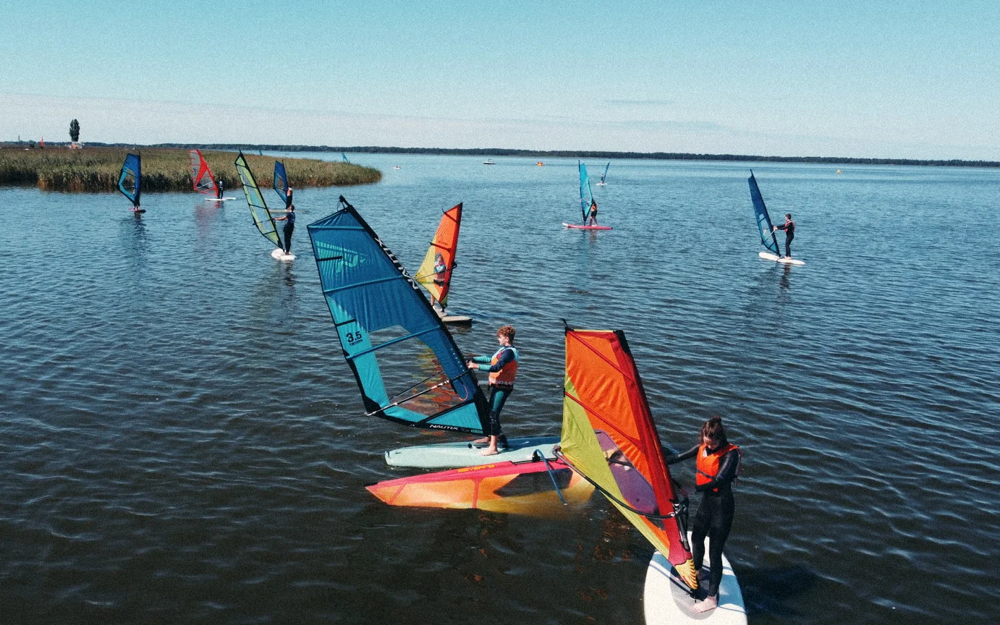
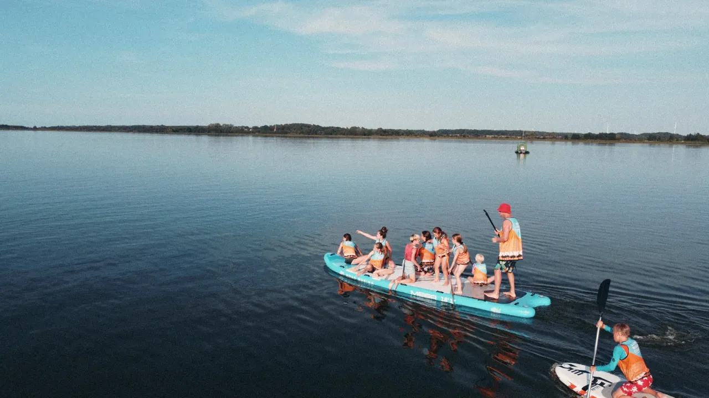
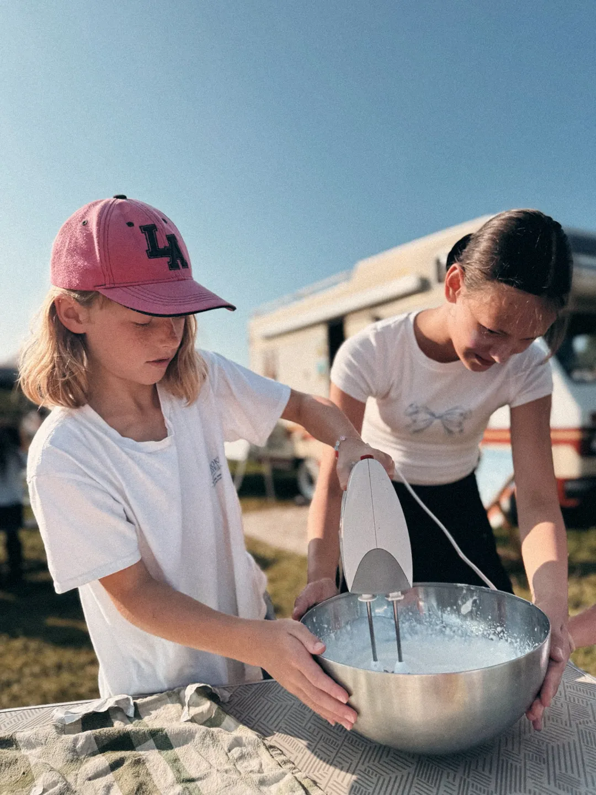
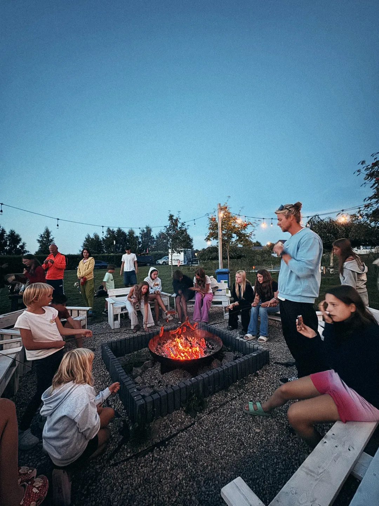
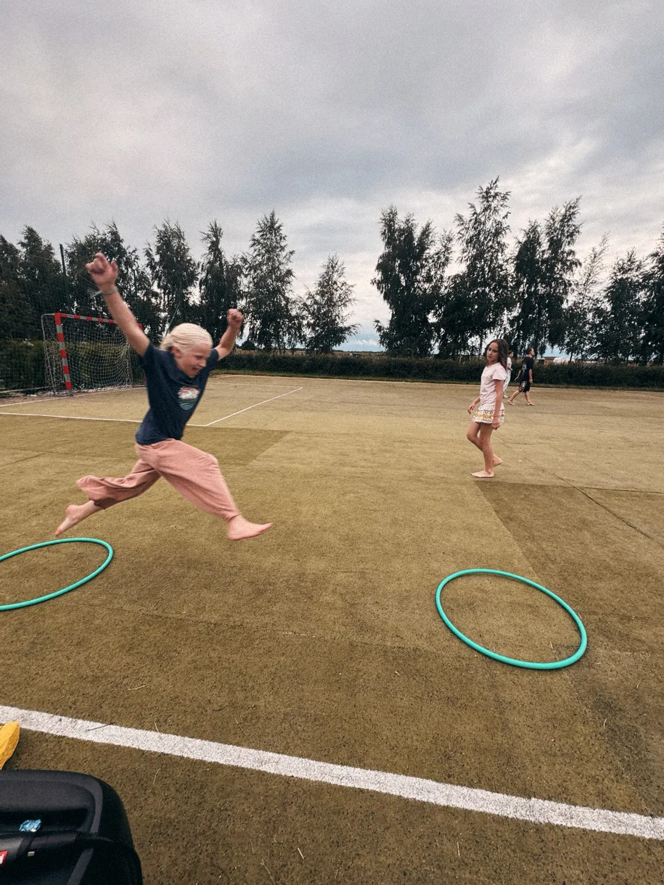
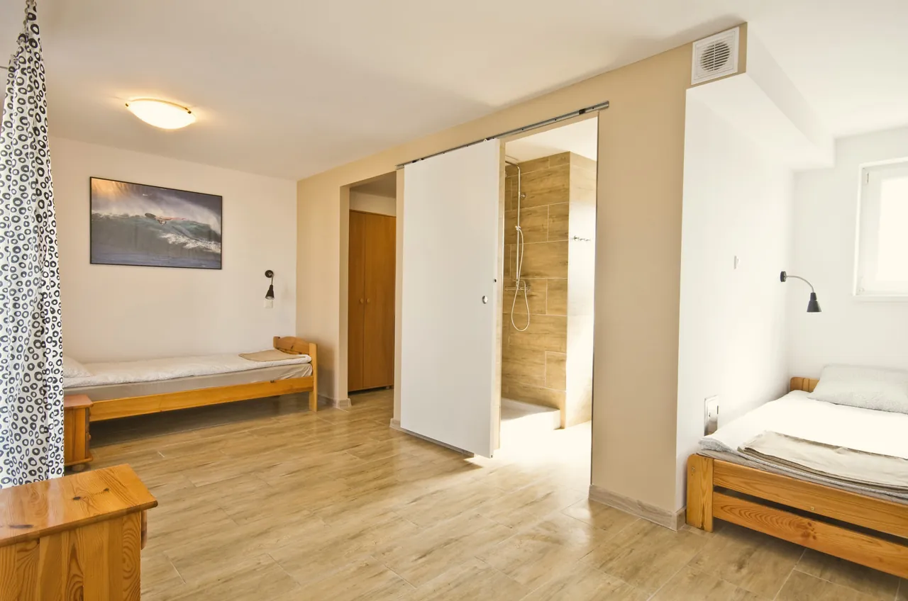
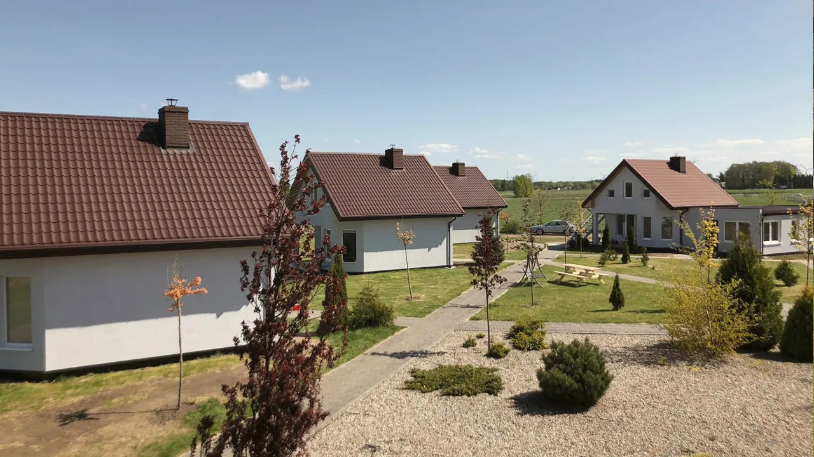
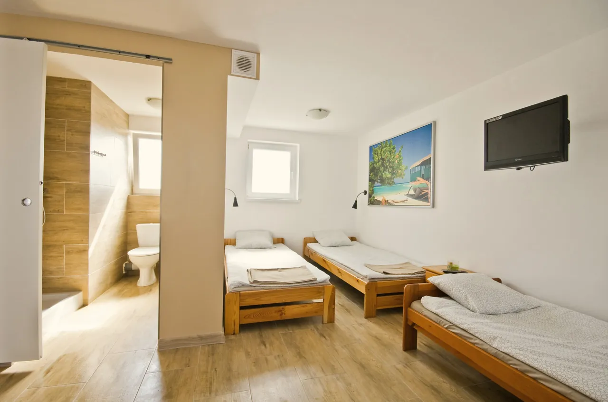

JEZIORO I MORZE
Sportowa baza nad Jeziorem Bukowo, blisko Bałtyku.

Surfing po hiszpańsku!
Wracamy do naszej sprawdzonej bazy WIND4YOU nad Jeziorem Bukowo! Przed nami tydzień pełen sportów, nowych znajomości, przygód i wakacyjnego klimatu.
Codzienne szkolenia windsurfingowe, SUP-y, kajaki, skimboard i naprawdę sporo aktywności na świeżym powietrzu. A do tego codzienne zajęcia z hiszpańskiego w zupełnie innej odsłonie! Uczymy się przez zabawę, gry, muzykę i wspólne aktywności w plenerze.
Nie zabraknie warsztatów, gier, ognisk i naszych LONGWAVE’owych niespodzianek.
Ekstra ludzie, bliskość natury i hiszpański luz!
Sportowa baza nad Jeziorem Bukowo, blisko Bałtyku.
Codzienne szkolenia z instruktorami, dopasowane do umiejętności.
Nauka przez zabawę, muzykę i aktywności na świeżym powietrzu.
Nowe znajomości, wspólne przygody i świetna atmosfera.
Siedem dni nad Jeziorem Bukowo, mnóstwo czasu na wodzie i codzienna dawka hiszpańskiego!
W Dąbkach łączymy szkolenia windsurfingowe z nauką języka hiszpańskiego w luźnej, wakacyjnej formie. Każdego dnia rozwijamy umiejętności na wodzie, a podczas zajęć językowych bawimy się, poznajemy nowe słówka, śpiewamy hiszpańskie piosenki i uczymy się w plenerze.
Bez szkolnych ławek i stresu! Zależy nam na tym, żeby uczestnicy oswajali się z językiem w naturalny sposób i przy okazji świetnie się bawili.
Nasze obozy bazują na kameralnych grupach, dzięki czemu możemy lepiej poznać uczestników, dopasować zajęcia do ich umiejętności i stworzyć naprawdę zgraną paczkę.
Na LONGWAVE na pewno nie znajdziesz czasu na nudę. SUP-y, kajaki, warsztaty DIY, skimboard i mnóstwo innych atrakcji. Chcemy, żeby dzieci próbowały nowych rzeczy, rozwijały swoje zainteresowania i wracały z obozu z nowymi doświadczeniami.
Dużo różnorodnych aktywności, ekstra ludzie i LONGWAVE FAMILY VIBES - to właśnie klimat naszych obozów!
Dla dzieci i młodzieży w wieku 7–15 lat.
Nie trzeba znać hiszpańskiego ani wcześniej pływać na windsurfingu!
Zapraszamy zarówno początkujących, jak i tych, którzy chcą rozwijać swoje sportowe i językowe umiejętności. Grupy dobieramy według wieku i poziomu zaawansowania.
Najważniejsza jest chęć próbowania nowych rzeczy, dobra zabawa i wspólnie spędzony czas.

Stawiamy na kameralną atmosferę, sprawdzoną bazę i program, który łączy sport, naukę i zabawę.
Kadry LONGWAVE





Za LONGWAVE odpowiadają ludzie, którzy na co dzień pracują ze sportem, dziećmi i młodzieżą.
Naszą ekipę tworzą doświadczeni wychowawcy, instruktorzy sportów wodnych, nauczyciele wychowania fizycznego i ratownicy.
Stawiamy na kameralne grupy, indywidualne podejście i dobrą komunikację z rodzicami.
Dużo sportu i nauki to również spory apetyt!
Zapewniamy trzy posiłki dziennie. śniadanie, obiad, kolację oraz podwieczorek.
Posiłki są urozmaicone, a przez cały pobyt uczestnicy mają nieograniczony dostęp do wody pitnej.
Istnieje możliwość wykupienia diety wegetariańskiej za dodatkową opłatą.

Pobudka, poranny rozruch lub joga.
Ładujemy baterie przed aktywnym dniem.
Dwugodzinne szkolenie z instruktorami.
Hiszpański na luzie! Gry, zabawy, piosenki i nauka nowych zwrotów na świeżym powietrzu.
Chwila na regenerację przed kolejnymi atrakcjami.
SUP-y, kajaki, skimboard, rowery lub inne aktywności.
Warsztaty, gry integracyjne albo czas na relaks.
Wspólny posiłek
Ognisko, film pod chmurką, Holi Party lub LONGWAVE SECRET PROJECT .podsumowanie dnia.
To przykładowy plan dnia. Godziny i kolejność zajęć mogą się zmieniać w zależności od pogody, warunków wiatrowych i programu turnusu.
Program dostosowujemy do pogody, warunków na wodzie i harmonogramu turnusu.
Na LONGWAVE CAMP stawiamy na wspólne spędzanie czasu, nowe znajomości i aktywności poza ekranem.
Dlatego telefony komórkowe udostępniamy uczestnikom raz dziennie na godzinę. To czas na kontakt z domem i podzielenie się wrażeniami.
Rodzice mogą być spokojni - kierownik obozu i wychowawcy pozostają do ich dyspozycji przez cały wyjazd.
Dojazd i odbiór uczestników odbywają się we własnym zakresie, w wyznaczonych godzinach.
Ośrodek wypoczynkowy WIND4YOU, położony bezpośrednio nad Jeziorem Bukowo, w otoczeniu natury.
Na miejscu mamy bazę sportów wodnych, dużo przestrzeni do wspólnego spędzania czasu oraz boiska do piłki nożnej, koszykówki i siatkówki plażowej.
Codzienne szkolenia odbywają się nad jeziorem, a bliskość Bałtyku daje nam dodatkowe możliwości aktywnego wypoczynku.
Lokalizacja: Gleźnowo 57, 76-156 Dąbki.

Kadry LONGWAVE

WIND4YOU Gleźnowo 57 Dąbki
Otwórz trasę w Mapach GoogleNasze wartości
Budowanie marki oraz tak niezwykłej społeczności to spełnianie naszych marzeń. Budowanie i realizowanie wszystkich projektach jest w 100% odzwierciedleniem naszych wartości, szczerości, a co za tym idzie autentyczności.
Jako organizatorzy wyjazdów mamy już kilkuletnie doświadczenie, natomiast zanim sami zaczęliśmy organizować wypoczynek zebraliśmy ogromne doświadczenie pracy z dziećmi.
Cokolwiek robimy, robimy to na 100%. Od kolekcji ubrań, deski aż po wyjazdy. Dopinamy każdy szczegół. Wychodzimy z założenia, że to właśnie te małe “smaczki” mają największe znaczenie i to one między innymi wyróżniają nas na tle konkurencji.
Podstawowym materiałem naszych desek jest BAMBUS - jeden z najbardziej trwałych materiałów. Ten wybór to nie jest przypadek. Dotyczy to również doboru materiałów do kolekcji ubrań, które cieszą się ogromnym zainteresowaniem. Podczas wyjazdów to właśnie jakość jest głównym powodem dla, którego nasi uczestnicy wracają
Marka LONGWAVE to tworzenie nietuzinkowych projektów. Staramy się aby w każdym działaniu było coś więcej, coś wyjątkowego. Własny produkt, klasyczny design, jedyne w swoim rodzaju wyjazdy, nieszablonowe eventy.
Określenie R O D Z I N A LONGWAVE narodziło się od samych uczestników CAMPÓW. Tworzymy rodzinę - społeczność, którą łączy wspólna pasja do życia na 100% Czujemy ogromną wdzięczność za to jakich ludzi przyciągamy i jak niezwykła społeczność tworzy się wokół marki LONGWAVE
Wszystkie nasze działania kierują się pozytywnym nastawieniem oraz pozytywną energią wypełniającą każde nasze przedsięwzięcie.
Do współpracy zapraszamy ludzi z bogatym doświadczeniem, kwalifikacjami oraz profesjonalnym podejściem. Sami stawiamy na ciągły rozwój na wielu płaszczyznach dotyczących naszej marki.
Twój kolejny wyjazd
Zapisy odbywają się w aplikacji LONGWAVE. Przy aktywnym terminie przejdziesz bezpośrednio do oferty.
Przy zapowiedziach zapisy nie są jeszcze otwarte.
Chcesz połączyć sąsiednie turnusy? Ustalimy możliwość dłuższego pobytu indywidualnie.
Wybierz interesujący Cię wyjazd i termin, a następnie kliknij „Sprawdź terminy” lub „Zarezerwuj”. System przeprowadzi Cię przez kolejne etapy rezerwacji w aplikacji LONGWAVE.
Nie! Wszystkie oferty, terminy i najważniejsze informacje możesz przeglądać bez logowania. Konto jest potrzebne do obsługi rezerwacji i dokumentów.
W aplikacji LONGWAVE. To tam możesz sprawdzić informacje o swoim wyjeździe oraz dokumenty i płatności powiązane z rezerwacją.
Tak, możesz zgłosić więcej niż jednego uczestnika. Dostępność miejsc oraz sposób rezerwacji sprawdzisz przy wybranym terminie.
Najlepiej skontaktuj się z nami. Sprawdzimy, czy dostępny jest inny termin lub podobny wyjazd.
Tak, możliwość i warunki rezygnacji określa umowa oraz regulamin danego wyjazdu. Przed rezerwacją warto zapoznać się z obowiązującymi zasadami.
Porozmawiajmy o Twoim wyjeździe
Opowiedz nam, co planujesz. Pomożemy dobrać wyjazd, termin lub program dla Twojej grupy.